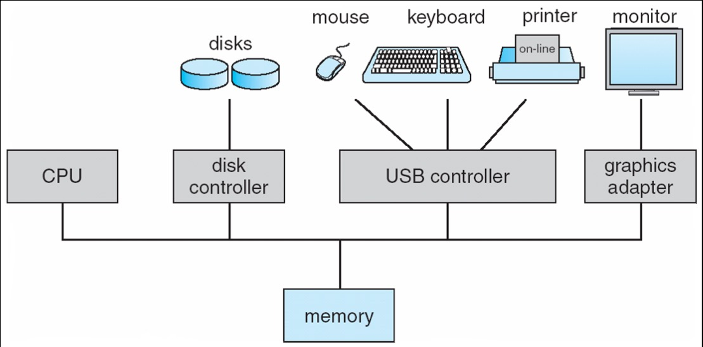
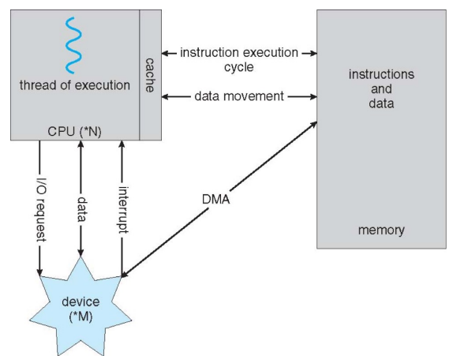
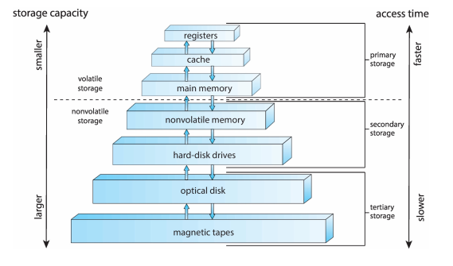
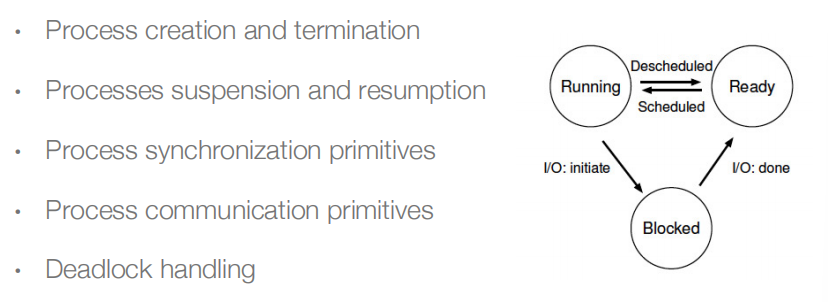

操作系统 (一)
Introduction
Linux是可扩展的，只不过扩展性不太好
用户态程序不能直接访问外设，还得是内核态才能访问外设，用户态只决定==如何==访问外设
引入
多核CPU中，同一段代码，可以同时被CPU_core0和CPU_core1执行，但问题是内存为同一块内存，如果同时对同一块内存做处理，就会产生冲突，有以下解决方法：
- CPU设计时就不支持内核并发
- 但事实上，为了支持多核系统，CPU必须支持并发，才能提高性能，所以需要想办法处理并发，支持multi_core；一个可行的办法是，一个core执行到这个函数时，把函数锁住，另一个等着（锁函数的力度越大，性能就越低）
Learning Objects
- Process management, CPU scheduling, file systems...文件系统，CPU调度，进程管理
- Multi-threading and synchronization, system call, kernel modules...
- CODE it
What OS do
-
OS is a resource allocator 管理和分配硬件资源
-
It manages all resources
- It decides between conflicting requests for efficient and fair resource sharing
- OS is a control program 监控和调度计算机资源
It controls program execution to prevent errors and improper use of system
Definition
OS refers to the Kernel.
Kernel is the one program running at all times on the computer.
Everything else is either a system program or an application program.
也就是说，system program是run在用户态的，内核态只有kernel！
Hardware Components

CPUs和device controller通过总线共享memory，并发执行的CPUs和设备控制器对memory的使用存在竞争。
Devices
外设由 device controller 掌管，如disk controller，USB controller，每个设备控制器都有一个local buffer，CPU在main memory和controller buffers之间移动数据。
因此，外设是通过controller和CPU、memory打交道的。
为了提高安全性，可以在controller和CPU、memory之间加IOMMU，对I/O能访问的地址做限定，外设所能引发的后果是有限的
DMA请求：
在外设和主存储器之间直接传输数据，而不需要CPU的干预；DMA 控制器负责管理数据传输的过程，同时允许 CPU 在数据传输过程中执行其他任务。
SoC(System-on-a-Chip)：
一种集成电路设计，将多个关键组件和功能集成到单个芯片上
IOMMU(Input-Output Memory Management Unit)：
一种硬件设备，用于管理和映射设备之间的输入输出 (I/O) 操作与系统内存之间的地址转换，由操作系统配置
Interrupts and Traps
interrupt，中断，硬件引脚信号产生的中断
Interrupt transfers control to the interrupt service routine.
- interrupt vector：存放service routines的地址的表
- interrupt handler：save the (interrupted) execution states
interrupt handler查询interrupt controller中的中断号，pc再去指到对应的interrupt vector，然后跳到service routines
CPU连的是中断控制器，接收中断的信息，外设和中断控制器连接，不和CPU直接关联。
trap，软中断，是软件层面产生的
A trap caused either by an error or a user request.
中断是异步的，trap是同步的(如 syscall)
OS is interrupt-driven.
Interrupt Handling
-
中断发生时：切换到特权态，pc指向中断处理程序开始的地方
-
OS preserves the execution state of the CPU
Save registers and the PC，把general registers和old_PC存到Kernel能操控的内存中 2. OS 判断是哪个设备造成的中断，决定中断源
-
polling：跳到固定位置，然后再去查寄存器的值判断是什么中断
处理请求频繁的情况，如网络请求，避免上下文切换消耗资源
-
vectored interrupt system：直接跳到向量表中对应的位置
-
-
OS 分发中断 by calling the device's driver，调用对应的中断处理函数
-
OS restores the CPU execution to the saved state
-
-
CPU跳回用户态程序时，需要做调度
-
跳到优先级高的进程中
-
如果跳回原来的进程中，直接restore CPU状态
如果不是原来的那个，由于中断之后，memory里保存着多个进程的上下文，找到要restore的进程即可
-
note: 中断处理程序中比较critical的部分执行时，会禁止中断，避免中断处理过于复杂，如递归中断等
I/O：from System Call to Devices, and Back
-
A program uses a system call to access system resources
-
OS converts it to device access(设备访问) and issues I/O requests
I/O requests are sent to the device driver, then to the controller
-
OS puts the program to wait (synchronous I/O) or returns to it without waiting (asynchronous I/O)
OS may switches to another program when the requester is waiting
同步I/O，用户态程序block在原来的地方，因为数据还没有ready
异步I/O，用户态程序不会被block，会继续往下执行
-
I/O completes and the controller interrupts the OS
-
OS processes the I/O, and then wake up the program (synchronous I/O) or send it a signal (asynchronous I/O).
program: syscall->device access->OS: issues I/O requests->device driver->device controller->program: wait or return->I/O complete->device controller: interrupts the OS->OS: process I/O->OS: wake up or send signal
Direct Memory Access (DMA)
搬运内存数据的时候，需要CPU执行指令 (LD ST)，效率低，这个时候CPU不能干其他事情；如果要搬运大量数据，就会占用CPU资源
所以提供一个DMA控制器，把数据从src拷贝到dst，由CPU告诉DMA，地址、大小，然后trigger，这个时候CPU就不需要再介入了，DMA在总线上完成拷贝，并通过中断告诉CPU拷贝完成。
-
device driver == I/O descriptor ==> device controller
-
The controller transfer blocks of data between its local buffer and main memory without CPU intervention.
不过，DMA只适用于大量数据搬运，否则中断带来的cost太大，得不偿失

Storage Structure
-
Main memory：the only large storage that CPU can directly access
存数据快，容量小，价格贵；random access，typically volatile
-
Secondary storage：large nonvolatile storage capacity
Magnetic disks是最常见的(HDD)，SSD
OS和device之间的交互是由device controller决定的
Storage Hierarchy
speed，cost，volatility (易失性)

Registers are managed by the complier, cache is managed by hardware, and main memory and disk storage are managed by OS.
Cache
-
description:
-
The main memory can be viewed as a cache for secondary storage
-
CPU has a cache for main memory
-
caching在hardware、OS、用户态程序中都执行
-
Data in use copied from slower to faster storage temporarily
先检查最快的
Multiprocess System
把多个CPU-core集成在一起
A Dual-Core Design
Multiple CPU Cores in a single chip，但当CPU Core的数量到达极限之后，想到了折中的办法
如果装不下8个Core，又想让8个程序都有机会运行，就在一个Core里，放两套register set，但只有一套执行单元，那么虽然在同一个时刻，只有一个程序能运行，当一个程序被调度出去时，不需要保存上下文，就能直接切换到另一个程序
Hyper Threading vs Multi Core
用比较少的硬件面积，换取性能提升，并不是把性能提高两倍，而是掩盖了上下文切换时间，程序之间的转换变快了
NUMA (Non-Uniform Memory Access System) 非统一存储器存取系统
每一个CPU都有自己的memory，CPU访问与它直接连接的memory会更快
多个memory是统一编址的，不会overlap
不希望同一个进程，在不同的CPU之间切换，往往会有domain的概念
Clustered Systems 集群系统
Clusters provide a high-availability service that can survive failures.
Distributed Systems 分布式系统
Special-Purpose System 专用系统
Real-time systems：不是比较快，而是，一个任务可以在给定的时间内运行完；硬实时，提供保证，软实时，尽力但不保证
MultiMedia systems
Handheld systems
Peer-to-peer Computing
e.g. : block chain
Operating System Operations：
-
Multiprogramming
一个job完成之后切换到另一个
-
Multitasking
在多个job之间频繁切换所以需要CPU调度
Dual-mode operation
-
Operating system is usually interrupt-driven
Efficiency, regain control (timer interrput)
-
Dual-mode operation allows OS to protect itself and other system components
user mode and kernel mode
至少需要两个等级
-
Transition between Modes
-
system calls
-
exceptions
-
interrupts
-
Timer (periodical)
Timer used to prevent infinite loop or process hogging resources.
为什么一定要有时钟中断？
如果没有周期性触发的计时器，系统会出大问题；用户态程序可以无限制地占用CPU的资源，除非有硬件中断、trap，操作系统没有机会接管CPU的运行，无法完成资源分配
Recource Management
-
Process Management
-
A process is a program in execution.
program是被动实体，process是主动实体
一个program可以同时有多个并发的进程在运行
-
Process needs resources to accomplish its task.
硬件中断产生，操作系统会跳到内核态
在I/O请求时，OS会保存这个进程的状态，这个进程会被block，然后OS返回到用户态，执行其它指令。等I/O处理完，发送ready信号，操作系统会看系统里有哪些进程处于ready状态，然后调度（depends on 当时系统状态），调度优先级高的。
操作系统要知道发生中断时，当前CPU的状态，并保存上下文。

-
-
Memory Management
-
具体做哪些事：
- Keep track of which parts of memory are being used and by whom.
- Decide which processes and data to move into and out of memory.
- Allocating and deallocating memory space as needed.
-
其它：
- 操作系统能通过MMU，改变不同进程能操控的物理内存空间
- 隔离用户态和内核态
- 用户态没有权限配置页表，这是特权操作
-
-
File Systems
-
data storage：
-
file is a logical storage unit that abstracts physical properties
文件通常以目录的形式组织；
访问控制(access control)决定了谁能访问文件
-
-
具体活动：
• creating and deleting files and directories
• primitives to manipulate files and directories
• mapping files onto secondary storage (二级存储器)
• backup files onto stable (non-volatile) storage media
-
-
Mass-Storage Management (大规模存储管理)
-
磁盘子系统管理大容量存储
该系统的整体速度取决于磁盘子系统及其算法
-
具体活动：
·free-space management
• storage allocation
• disk scheduling
-
-
I/O System Management
-
I/O子系统向用户隐藏了硬件设备的特性
-
主要负责：
-
manage I/O memory
·buffering
·caching
• spooling: the overlapping of output of one job with input of other jobs
-
OS可能提供通用的设备驱动接口
优：面向对象
劣：大量使用函数指针，安全隐患
-
-
Policy: which questionhow question about a system
如，哪一个配置文件
Which process should be process to be switched
在不特别说明的情况下，进程调度指的是调度进程中的线程
只有讲到线程概念时，才会严格区分
Mechanism: how question about a system
如，如何解释配置文件的过程
How does an operating system performs a context switch
From Process to Thread
Single-threaded process has one PC.
并发能力：1s能处理多少请求
创建进程、进程数据通信的开销非常大；如果能设计轻量级的进程，也就是说，创建很快，没有数据通信的开销，而且它能被单独调度，调度到空闲的CPU Core上，就能提高性能。
memcpy(dst, src, size); 跨进程做是很麻烦的
线程：
-
在OS中，被调度的最小单元是线程
调度，把CPU的资源给到一个进程
-
每一个线程，都有自己的栈
-
线程和线程之间，是共享进程的地址空间的
线程和线程之间，栈和地址是不隔离的
同一个进程中的线程，共享了同一个进程里的memory资源
创建一个新的线程，意味着要新create一个栈出来
Stack 栈
就是内存存储区域中的一块，不是特殊的硬件
进程和线程
-
线程是调度的最小基本单元
线程会增加系统的并发性，如果一个进程中有五个线程，当5个core都空闲时，可以同时run这5个线程
线程之间的数据共享特别容易，但是访问的data是共享的，共享该进程的虚拟地址空间
-
进程是资源分配的最小基本单元
需要做好进程A和进程B之间的隔离，进程和进程之间贡献数据的开销比较大
虚拟地址空间是以进程为粒度的
虚拟化 (Virtualization)
操作系统把物理资源转换成易于使用的虚拟形式，system call是程序和OS之间的接口
- 操作系统对应用态的程序掩盖了底层硬件资源的细节
- 用系统调用的形式去使用操作系统的函数
- 用户态程序不需要关心底层有几个CPU核、什么时候调度
- 操作系统内核帮你做进程管理、进程调度，就好像一个程序能完整地拥有CPU资源一样
Concurrency
1 2 3 4 | |
两个create出来的线程都在做worker这个函数，线程t1和t2都会修改全局变量counter的值
如果worker中循环次数定为5000，每次把counter++，那么最后counter的值不一定是10000
counter++的值对应3条机器指令，lw, add, st，当进程调度剥夺CPU资源时，再回来时需要从原来的地方接着往下执行，也就是说如果刚刚好执行到add时t1被剥夺CPU资源，t2把counter成功+1，再回到t1时，不回再把lw执行一次，而是用之前lw的old_counter加一，这就导致加了两次，counter值只加了1
原因：对counter++的操作不是原子的
解决方法：在counter++ 的地方加一个locker；在counter++前面加一个check，如果拿到locker，就继续，如果拿不到就循环，注意locker只能被一个线程拥有，从而保证对counter++操作的原子性
Conclusion
-
OS：
虚拟化资源：CPU，memory，disk
处理相关问题：如，并发性
持久地存储文件
-
Goals：High performance，Protectio，Reliability，Emergency-efficiency，Security